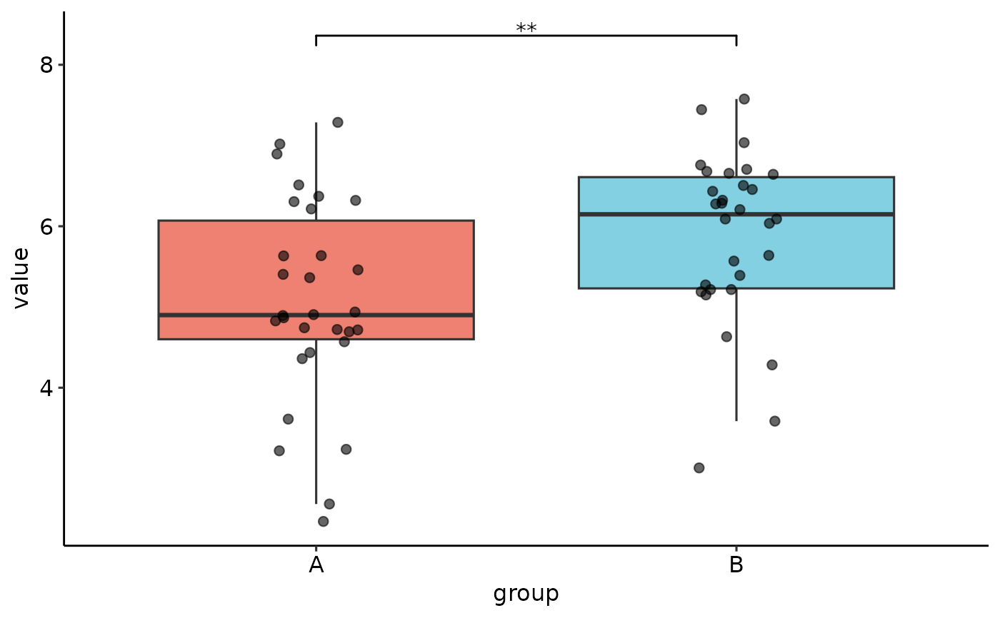

Performs a t-test or Wilcoxon test for exactly two groups, with automatic
method selection based on normality when method = "auto".
Always uses Welch's t-test for unpaired comparisons (no equal-variance
assumption).
Usage
quick_ttest(
data,
group_col,
value_col,
method = c("auto", "t.test", "wilcox.test"),
paired = FALSE,
id_col = NULL,
alternative = c("two.sided", "less", "greater"),
alpha = 0.05
)
# S3 method for class 'quick_ttest_result'
plot(
x,
y = NULL,
plot_type = c("boxplot", "violin", "both"),
add_jitter = TRUE,
point_size = 2,
point_alpha = 0.6,
show_p_value = TRUE,
p_label = c("p.signif", "p.format"),
palette = "qual_vivid",
...
)Arguments
- data
A data frame.
- group_col
Character. Column name for the grouping variable (exactly 2 levels).
- value_col
Character. Column name for the numeric response variable.
- method
One of
"auto"(default),"t.test","wilcox.test".- paired
Logical. Paired test? Default
FALSE. Requiresid_colwhenTRUE.- id_col
Character. Column name for the pairing identifier. Required when
paired = TRUE.- alternative
One of
"two.sided"(default),"less","greater".- alpha
Numeric. Significance level. Default
0.05.- x
A
quick_ttest_resultobject fromquick_ttest().- y
Ignored.
- plot_type
One of
"boxplot"(default),"violin","both".- add_jitter
Logical. Add jittered points? Default
TRUE.- point_size
Numeric. Jitter point size. Default
2.- point_alpha
Numeric. Jitter point transparency (0-1). Default
0.6.- show_p_value
Logical. Annotate plot with p-value? Default
TRUE.- p_label
One of
"p.signif"(stars, default) or"p.format"(numeric).- palette
evanverse palette name. Default
"qual_vivid".NULLuses ggplot2 defaults.- ...
Additional arguments passed to the internal plotting backend.
Value
An object of class "quick_ttest_result" (invisibly)
containing:
test_resultAn
htestobject from the testmethod_usedCharacter:
"t.test"or"wilcox.test"descriptive_statsPer-group summary data frame
normality_testsShapiro-Wilk results (auto mode only);
NULLwhen method is forcedparamsList of input parameters
dataCleaned data frame used for the test (for
plot()method)
Use print(result) for a one-line summary, summary(result)
for full details, and plot(result) for a comparison plot.
Details
Auto method selection logic:
\(n \ge 100\): t-test (CLT applies; Shapiro-Wilk unreliable at large n)
\(30 \le n < 100\): Shapiro-Wilk at \(p < 0.01\) threshold
\(n < 30\): Shapiro-Wilk at \(p < 0.05\) threshold
Examples
set.seed(42)
df <- data.frame(
group = rep(c("A", "B"), each = 30),
value = c(rnorm(30, 5), rnorm(30, 6))
)
result <- quick_ttest(df, group_col = "group", value_col = "value")
print(result)
#> t.test | p = 0.0089* | A n=30, B n=30
summary(result)
#>
#> ── Two-group Comparison ────────────────────────────────────────────────────────
#>
#> ── Parameters ──
#>
#> Test: Welch two-sample t-test
#> Direction: A - B
#> Alternative: two.sided
#> alpha: 0.050
#> Paired: FALSE
#>
#> ── Result ──
#>
#> ✔ p = 0.0089 (significant at alpha = 0.05)
#>
#>
#> Welch Two Sample t-test
#>
#> data: value by group
#> t = -2.7096, df = 56.249, p-value = 0.008913
#> alternative hypothesis: true difference in means between group A and group B is not equal to 0
#> 95 percent confidence interval:
#> -1.4079331 -0.2110762
#> sample estimates:
#> mean in group A mean in group B
#> 5.068587 5.878091
#>
#>
#> ── Descriptive statistics ──
#>
#> # A tibble: 2 × 7
#> group n mean sd median min max
#> <fct> <int> <dbl> <dbl> <dbl> <dbl> <dbl>
#> 1 A 30 5.07 1.26 4.90 2.34 7.29
#> 2 B 30 5.88 1.05 6.15 3.01 7.58
#> ── Normality (Shapiro-Wilk) ──
#>
#> A: n = 30, p = 0.350
#> B: n = 30, p = 0.064
#> → Medium samples (min n = 30). Data reasonably normal (all Shapiro p ≥ 0.01).
#>
plot(result)
